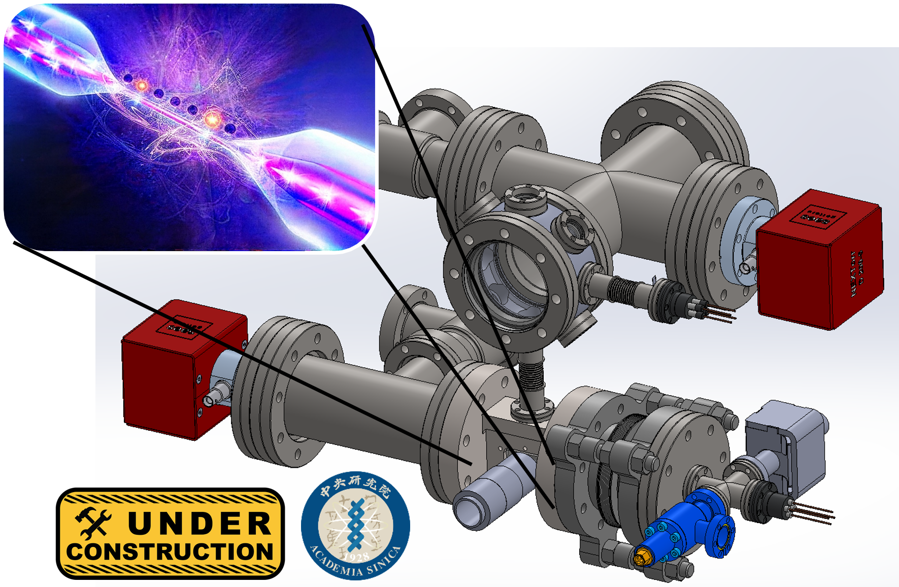

Projects
Within our lab we are currently developing three complementary cold-atom platforms: Pathfinder, Hybrid atom–nanofiber tweezers, and Strongly interacting atoms in optical cavities. Together, these platforms form the experimental backbone of our research program, spanning continuous quantum matter sources, engineered light–matter interfaces, and strongly interacting many-body systems. In addition we have a strong technology development effort including electronics, lasers, software and spectroscopy.
Our lab began in January 2025 and is progressing rapidly. New projects are constantly becomming available and older projects complete. Whether you just want a short project to see if experimental AMO physics is for you or whether you are experienced and looking for a phd scale challenge that could be published in nature, we have projects that can suit different backgrounds, interests and career stages. If you think you might be interested contact us or come and visit our lab and we can describe currently available projects to see if there is something that is a match for you.
Pathfinder

Pathfinder is our first-generation flagship platform and the first ultracold ytterbium system in Taiwan. Building on our earlier work, this machine continues to explore new methods for laser cooling and continuous operation of quantum systems.
Pathfinder is designed as a versatile testbed capable of continuous steady-state operation for continuous quantum sensing, precision metrology, continuous atom lasers, and continuous optical clocks. Pathfinder is focussed on testing new concepts and new architectures that may be further developed in future dedicated platforms.
Hybrid atom–nanofiber tweezers

Hybrid atom–nanofiber tweezers is a second-generation platform aimed at deterministic control of arrays of single ytterbium atomic (qubits) coupled together using the mode of an optical nanofiber. Here, the guided mode of the optical nanofiber acts as a quantum information "bus".
This platform will experimenatlly explore waveguide QED with neutral atoms, enabling strong and controllable atom–photon interactions for applications in quantum computing, quantum information processing, quantum networking/distributed quantum computing, and hybrid light–matter interfaces.
Strongly interacting atoms in optical cavities

Strongly interacting atoms in optical cavities focuses on the exploration of collective and many-body physics arising from long-range, cavity-mediated interactions.
This platform targets regimes relevant to cavity QED, superradiant physics, and emergent nonequilibrium phenomena, with direct connections to next-generation optical clocks and quantum simulators.